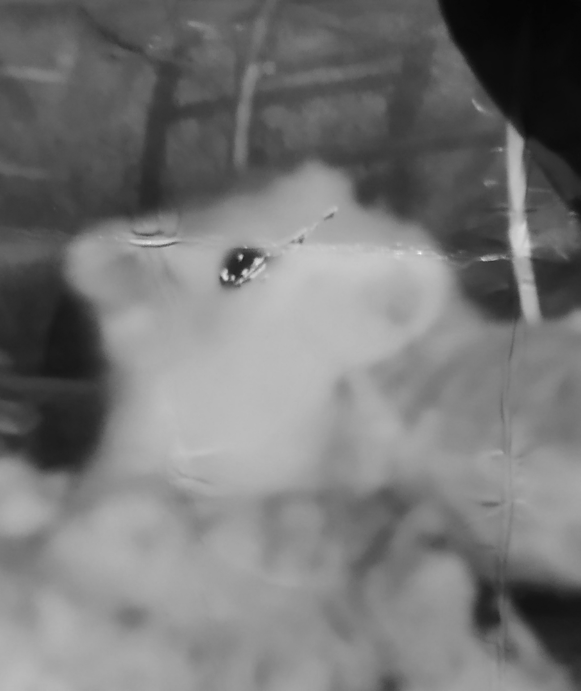

| Portrét | Základní údaje | Významné činy | |
|---|---|---|---|
|  | Pepík | Vymočil se staršímu bráchovi na krk, jedl rád mandarinky | |
| ⭐: Neznámé | ☠️: Neznámé | ||
| Pepík byl první křeček Erika Grafa. Jedná se o samce křečka zlatého/syrského. Tento druh křečka může mít různou povahu, Pepík měl agresivní povahu. Kousal všechny prsty které mu stály v cestě. Také rád křičel. Zemřel na vykrvácení z ucha kvůli parasita. | |||
| Pepík s mandarinkou | |||
| Info o druhu: https://cs.wikipedia.org/wiki/Křeček_zlatý | |||
Značky a atributy tabulky
- table
- Celá tabulka
- thead
- Záhlaví tabulky
- tbody
- Tělo tabulky
- tfoot
- Patička tabulky
- colspan
- Rozpětí přes několik sloupců (collumn)
- rowspan
- Rozpětí přes několik řádků (row)